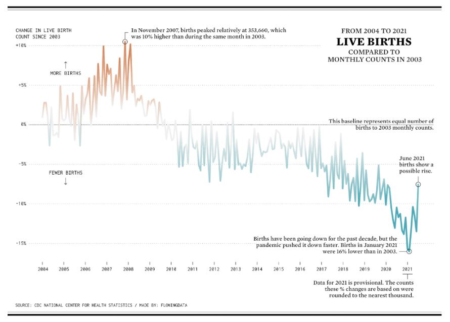

n this module, we’ll cover two major ideas:
We visualize data to accomplish a goal – to explore and see something new in the data, to strengthen an argument with a visual aid, to share a data-driven idea with someone else, and more.
Our design decisions can either help or hinder how effectively a data viz communicates. We tell stories with data viz (yes, even if it’s a simple visualization) using good design choices in chart type, color, labels, context, and more.
There is so much we could say about data viz! It definitely won’t all fit here though, so in this Data Viz Basics lesson, we’re only talking about visualizations that are static (no moving parts or animations) and fixed (no interactivity).
From Data Type to Chart Type
The first step of making a data visualization is choosing a chart type. Chart type isn’t our only tool when it comes to visualizing data, but it’s an important one for communicating about the relationship we want to show.
In this context, a “relationship” in the data could mean something like…
- “the shop’s sales of Gouda were higher in 2021 than any year since 2006”
- “30% of people ordered pizza with pineapple”
- “most people in the sample have a shoe size between 6 and 10.5”
- “as temperature increases, ice cream sales increase”
The first example is a change over time – that can be perfect for a line chart or a bar chart.
The second example compares a part to the whole: 30% of people got pizza with pineapple, out of 100% of people who ordered pizza. A pie chart is the classic (sometimes controversial) choice, but newer options include waffle and donut charts. Yum!
The third example is a distribution – the spread of data points in one variable. A histogram is the classic choice for visualizing a distribution.
The fourth example is a direct comparison of two variables to help understand a trend. This is perfect for a scatterplot, with or without a trend line.
There’s often more than one possible chart we can use for a dataset. But different charts emphasize different questions, arguments, or relationships in the data, and whichever we choose should help translate that data relationship into a visual relationship.
Next up, we’ll get to know these charts a little better.
Univariate Charts
One big consideration when choosing a chart type is how many variables we’re comparing. Univariate charts help us visualize a change in one variable. Often that means measuring “how much,” which can either be a count or a distribution.
A common chart for counts is the bar graph. If we want to compare an amount between different categories, like “how many of each coin is in the piggy bank” or “how many birds were saved by species,” a bar chart translates the difference in count to a difference in bar height. Remember, the data relationship is translated to a visual relationship.
Another common univariate chart is the histogram. Histograms measure the distribution or spread, of a variable.
Histograms are a great way to show the concept of a normal (or skewed) distribution. We can visualize the answer to questions like…
- “how does foot size vary across the population?”
- “what is the distribution of pregnancy length across the human population?”
- “how is income distributed in my country?”
A density curve also visualizes a distribution, without putting data in bins like a histogram does.
A more “math-forward” way to visualize distributions is a box plot or violin plot. These visualizations make percentile and quartile values obvious.
Last up, outside the counting and distribution category, let’s consider a univariate map. This would be a map where the only variable is geographic, i.e. a map that just shows us location and distance.
Bi- and Multivariate Charts
Next up, bivariate and multivariate charts! These charts show the relationships between two or more variables.
The classic bivariate example is the scatter plot — one variable on the x-axis, another on the y-axis, and each point helps us compare the two variables by its position on the graph.
Scatterplots translate the relationship between two variables in the data into an easy-to-see spatial relationship. Because we’re relying on the idea that each variable increases as we move up the X or Y axis, the scatterplot only makes sense for numeric variables, not categorical.
A line chart is another common bivariate chart, often measuring a variable changing over time. A stock chart, for example, measures the value of a company over time.
A line chart with multiple lines for different variables is a multivariate chart. For an example, check out the line chart that plots both imported and domestic cheese sales.
Last but not least, let’s think about a bivariate map. It shows a basic geographical map plus an additional variable — this example shows roughly where different pasta shapes originated in Italy. We can also map precipitation, altitude or depth, median income, museum locations, or combinations of variables… the list is endless.
Charts often rely on visual signifiers besides chart type to visualize additional variables in the data. For example, the lines on a multivariate line chart are distinguished by pattern and color, and a scatter plot can use color, shape, or dot size to make a third variable apparent. Read on for info on color, shape, and more!
Aesthetic Properties II: Information Redundancy
Let’s take a closer look at this graph. There’s a connection here between size and y-position (how high or low a circle is): they actually tell us the same information twice!
This is an example of information redundancy, or encoding the same information in different visual properties. We already know that Facebook has the largest company value because it’s the highest circle on the chart. Its large size gives us another way to visually compare it to the other data points.
Info redundancy is also helpful for prioritizing values. There are lots and lots of smaller companies on this graph – if every circle were the size of Google’s circle, the bottom part of the graph would be an unreadable ball pit. Or, if all the circles were the size of the smallest ones, the chart would lose some of its emphasis on Facebook’s large IPO value. Information redundancy helps key data points to stand out.
Color and x-position are also redundant on this graph, making the chart a little easier and faster to interpret. The three color groups in the graph help break up the three-ish decades shown, giving us a sense in one glance that red circles are part of an early group, purples are in a middle group, and blues are the latest.
We’ll dive deeper into accessibility later, but for now note that information redundancy is also an important practice to ensure that colorblind viewers can access all the information in a chart.
To sum up, information redundancy visualizes the same information using multiple different aesthetic properties. It’s important for readability, organization and prioritization of information, and accessibility.
Consider the Audience
The best data visualizations help us to understand what’s in the data, draw meaningful conclusions, and make decisions about the next steps. This requires context and different context is appropriate for different audiences.
Let’s walk through an imaginary-world example:
Shinji, Paola and Raj work together in an ecology lab. Their lab is applying for funding for a field research trip next year. This week, each of them will present the lab’s work and data to a different potential funder:
- Sir Avon Rattleborough, retired ecologist and expert field researcher
- Claude Tuber, board game developer and eccentric venture capitalist
- Milana Diamante, heiress and amateur biologist
The three labmates know they’ll have to communicate differently to each of these potential funders. They’ll communicate the same information, but each lab member will personalize their chart with a title and annotations that work best for their intended audience.
With this in mind, let’s get some background on the funders and see which title and annotation is most effective for each graph…
Sir Avon has over 50 years of ecology research under his belt, and lives for the details. He’s not familiar with the lab’s work specifically, but he knows the lingo. Sir Avon always wants to see proof.
Claude is a big picture thinker: he’s wondering if the lab’s research can be turned into a fun and educational board game for a broad audience. He’s excited about it but knows nothing about ecology. Claude has a limited attention span.
Milana is an enthusiastic citizen scientist in her free time, and is eager to support a worthy cause. She’s never done field research herself, but has some background knowledge and has been following the lab’s work for a couple years. Milana loves to ask follow-up questions.
Context is Key
We tend to think of context as “outside” a data visualization, but Shinji, Paola and Raj had the right idea by including appropriate context using titles and annotations. Each of them also did a great job of considering their specific audiences when making decisions about what context to include or not.
Viewers need context to understand what a data visualization means and why it matters.
Paola predicted that, as a scientist, Sir Avon would want to know the technical details like the amount of error in the measurements. She didn’t take up space on the graph with definitions, since she knew they weren’t necessary in this case.
Shinji decided to use a question and answer format for their title to help communicate the takeaway of the graph to Claude in an accessible way. Shinji went for a more aggregated, less detailed approach to help keep the conclusion simple and digestible.
Finally, Raj made good choices in his visualization for Milana: a descriptive but slightly-less-technical title, and a pointer towards definitions of terms he thinks Milana may not know and would be interested to learn.
In each case, the lab member made sure to…
- Provide necessary details
- Include context that’s helpful for the specific audience
- Avoid “chart junk”: excess graphics, annotations, and general lines that don’t actually contain information
Accessibility Basics
Now that we can make some visualizations, let’s talk accessibility to make sure our work reaches everyone who wants to interact with it!
The most commonly discussed accessibility concern is color, since color blindness affects 1 in 12 males and 1 in 200 females. That’s more common than we tend to think! There are a few different types of color blindness: check out the images for simulations of each form.
The big takeaway when designing for color accessibility is to think not only about the hue of a color (e.g. red, green, or purple), but the value as well (e.g. bright red, light green, dark purple). Good color comparisons use high contrast values, not just different hues.
It’s also important to use readable fonts in readable sizes, and make sure they’re web-accessible if online. (If you don’t do this, [] [] [] [] [] [] [] will happen!)
Finally, for online data visualizations, make sure to include alt text as we would for any other web image. Alt text ensures that users experiencing a visualization through a screen reader won’t miss out on whatever information it contains.
To recap, here’s a checklist for baseline accessibility:
- Colorblind-friendly color palettes
- Large enough font size
- Readable, web-accessible font type
- Alt text on data visualization images online
Further Accessibility: Universal Design
In the last exercise we covered accessibility guidelines specifically related to vision access – using color palettes, fonts, and alt-text to ensure that people across the vision spectrum can access our work.
The same accessibility goal – making our work available and easier to access for more people – is a great principle to keep in mind no matter what. (This is actually called “universal design.”)
We can apply it when it comes to…
- Readability: keep the reading level to a high school level whenever possible
- Prior knowledge: define unfamiliar terms and avoid unnecessary jargon
- Information overload: introduce new information with intentional pacing and organization
Remember the ecology lab’s pitches for funding? Each lab member took a different approach based on their audience. The difference between the pitches for Sir Avon and Milana is a perfect example of “leveling” content for the intended audience: swapping the more technical term “ecological niche” with the synonym “ecosystem role” makes the graph’s title readable with more everyday words, without changing the meaning or even sacrificing detail.
Finally, with any of these practices, there may be situations where it’s not the right call. Trinh probably shouldn’t avoid all technical language on the graphs in his peer-reviewed paper, and there may be no need for Anabelle to define industry terms when presenting a chart to work colleagues in her department. But for most audiences, and especially for broad or unknown audiences, keeping accessibility in mind will help everyone get the most out of our visualizations.
Conclusion
We made it! This lesson covered everything you need to know to start designing data visualizations that look great, communicate effectively, and treat data ethically.
Here’s a recap of what we talked about…
- Choosing the right chart type for our data
- Mapping variables onto aesthetic properties to communicate using position, shape, size, color
- Making effective color choices for data, design, and accessibility
- Designing accessible visualizations
- Scaffolding the visualization with context for the audience
- Owning the role of author T hat’s a big chunk of information. Pat yourself on the back for making it to the end of this lesson, then go forth and visualize!
Misleading & Confusing Graphs
Have you ever used a map that was just… wrong? As in, “this entire building doesn’t exist on the map” wrong, or “it almost had me drive down a one-way street” wrong. You notice pretty quickly, right?
What about a map where countries are the wrong size? How long do you think it would take to notice that something was off?
Anyone who has ever learned geography from a map has learned something “wrong.” Mapmakers have known for hundreds of years that it’s just not possible to transfer the earth’s 3D information to a 2D map without changing the shape or size of the continents and oceans – something has to be sacrificed.
(Check out this GIF showing a Mercator projection versus the actual size of countries. The Mercator projection, invented in 1569 and widely used to teach geography through the 20th century and today, severely distorts the size of land masses near the poles.)
The same idea is true in data visualization. Data visualizations take information from the living, breathing world that we inhabit and show it to us in just a few square inches of screen or paper. That always involves prioritizing speed, or accuracy, or sample size, or cost, or another factor, at the expense of something else.
While the best graphs really do teach us something new, and help us understand a deeper truth using data, graphs can also be misleading, both intentionally or unintentionally. We shouldn’t ever assume that a data visualization shows us the truth, the whole truth, and nothing but the truth.
This lesson will help us recognize the elements of misleading and confusing graphs so that we can avoid making them ourselves.
Axes
Axes and scaling are like the page layout and spacing of a paper book: they’re not the most exciting parts, but they do present plenty of opportunities to make it harder to read.
Let’s start with axes – the x-axis (horizontal, left-right) and y-axis (vertical, top-bottom). A common misleading aspect of an axis is a break. A break starts the count at a number that’s not zero, or jumps ahead – this can distort the amount of difference between data points by removing context, and make small differences in data seem bigger.
Here’s an illustration of that idea: it would be almost impossible to tell at a glance if there were 100, 105, or 110 people standing in a room – but you’d be able to easily tell the difference between 0, 5, and 10 people standing in a room. Using a break on an axis can have the same effect, amplifying the change rather than the context because it alters the proportions in the visualization. Check out the graphs below to see what this looks like in practice.
So what to do? If you’re looking at a graph, take a second to check where the axis starts. If there’s a break, factor that in as you think about what the numbers mean.
If you’re making the graph, instead of using a big break…
- Keep enough context to view differences in proportion to a meaningful amount, OR
- Make two graphs, one without a break and one “zoomed in”, OR
- Choose a visualization type that shows the change, rather than the raw numbers
Scaling
Scaling refers to the distances between numbers on an axis. Almost all graphs use a linear scale, where the numbers count up by a consistent interval – tenths of a centimeter or millions of dollars, if it’s the same interval, it’s a linear scale.
The other scaling option is a logarithmic scale, a.k.a. log scale. The log scale is common for showing exponential growth that won’t fit on the page with a linear scale, but it’s almost never a good choice for a general audience. Unless people use log scales regularly, they tend to have trouble interpreting them correctly.
Check out the graphs below to see how the pharmaceutical company Purdue infamously used this misinterpretation to their advantage in the early 2000s. The linear scale shows how the concentration of a painkiller drug spikes sharply in the bloodstream at higher doses – the log scale makes it look like all doses behave pretty similarly. (These are reproductions of the original graphs, but we can definitely see how differently they represent the same numbers.)
In general, just like it’s always worth checking for a break, it’s always worth checking how a graph is scaled.
Last thing about axes and scaling: generally, we measure time horizontally, putting that variable on the x-axis. For the vast majority of circumstances, this makes the most sense and helps readers to intuit what the graph measures
Color Scales
Color is often the first thing we register when looking at data visualizations. There are three types of color scales, used for the three major types of relationships we can visualize with color.
Sequentialscales are colors in a sequence – often, this is the same hue with more and more white added to or taken away from the color. Sequential scales are used to show a variable increasing or decreasing in intensity or amount, like income, depth, or percent of population that owns a chinchilla.Divergentscales are anchored by colors from opposite sides of the color wheel, a.k.a. complementary colors. A divergent scale is used to visualize data where the middle is a baseline, and either side represents a contrasting change. For example, divergent scales do a good job of showing a positive/negative swing in voting or polling, temperatures above and below freezing, or gains and losses over time.Categoricalscales use a variety of colors to differentiate categories without assigning a rank or order to them. In other words, “purple” doesn’t necessarily mean more than “green” – the two are just different colors. Categorical scales are for categorical data, like types of vegetables in a supermarket, or different treatments tested in a controlled study, or organizational blocks on a calendar.
Color Associations
Once we’ve picked the right color scale, there are still a few more considerations to be made to reduce confusion.
First up, we tend to view darker colors as “more” and lighter colors as “less.” For example, if we’re visualizing which US states have the most pet ferrets, California – with the most pet ferrets of any state – should be the darkest state on the map. When this scale is reversed, people will tend to just read the graph wrong rather than reading the legend carefully.
We also come to data visualizations with pre-existing associations for certain colors. These can be culturally specific (red means bad vs. red means lucky), or influenced by the norms for a particular field (red means negative financial balance).
Sometimes it’s good to stick with what’s recognizable: it would be confusing for US voters if a major newspaper decided to visualize Democrats in red and Republicans in blue, since these colors are overwhelmingly associated with the opposite party.
But in other cases, switching up colors that have existing cultural associations can reduce harmful stereotyping. Using pink for women and blue for men reinforces an outdated, binary view of women as soft and passive, and men as strong and unemotional. This design choice will not only turn off some viewers, it may also distract on a graph where gender is a relevant variable but not the whole focus.
It would be confusing to just reverse this stereotypical color palette, but there are plenty of good alternatives – check out two examples from The New York Times below. The important thing is to be consistent with the alternative palette.

Labels and Titles
A good title is one of the best and fastest tools for making a more understandable visualization. Lots of confusion can be saved with a descriptive title.
If the graph doesn’t have a good title (or even a title!), viewers have to do more legwork to first figure out what each axis measures and then what the data points show.
The title can be a question that visualization answers, like, “Who speaks more in Disney movies, male or female characters?”
Titles can also be a statement of what the visualization shows, like “Comparing denim inseam lengths through the decades” or “Millennials really do spend more on rent than on avocados” or “The effect of hunger on mood level.”
Like a good title, annotations on a graph also help the viewer to understand what’s going on. Annotations are perfect for calling out points of interest, explaining outliers, or including background information that a viewer won’t necessarily know from just looking at the graph.
Check out this Live Births graph from FlowingData to see how much value the annotations add.

They…
- add detail to the highest and lowest points on the graph
- explain what the 0% baseline means
- provide a caveat for the 2021 data
- reinforce in words that the percents on the y-axis show “more births” and “fewer births”
Just a few lines of thoughtful annotation here and there give the audience so much more ability to interpret the graph at a deeper level!
Conclusion
That was a short primer on some common misleading parts of data visualizations – pitfalls that get between the actual truth of the data and how the viewer understands it.
People make misleading or confusing graphs on purpose and by accident. We’ve seen how intentional changes to the scaling can really distort what the graph seems to say, and also how going with the status quo on color palettes can be helpful or harmful. Most of us aren’t out here trying to make misleading graphs – very often, it’s just a question of making a better or worse decision while designing the data viz.
And improving our design skills – knowing when to use different color palettes and how to label our axes clearly – not only makes our graphs better, it also reduces bias! When we follow best practices in design, we’re not “going rogue” and just making design decisions that make the graph look the most extreme, or suit our needs at that moment. We’re following established practices that help to standardize graphs so that we can focus on what the data’s really saying.
Long story short: good data viz is always a combination of quality data and effective design choices. If we can avoid confusion or missteps along the way, that’ll always be a good thing!